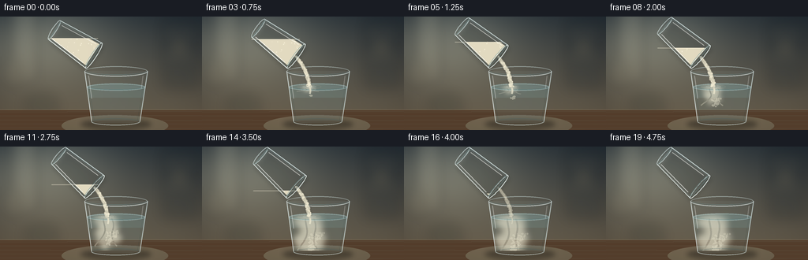
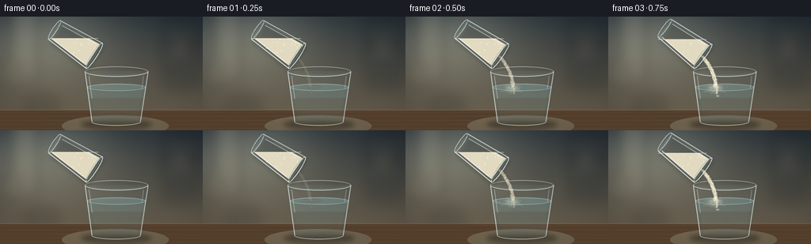

CODING AGENTS AS PIXEL WORLD MODELS
traex/GPT-5.6-Sol · material_0019
点击播放 · 原生 RGB 像素
逐轮保存的候选
回放视频、检查图与代码变化。
每份候选均可单独播放。实际图片检查记录在下方工具轨迹中。
候选 01播放与检查图
点击播放 · 原生 RGB 像素


展开代码变化
--- 上一保存版本
+++ 本次保存版本
@@ -0,0 +1,317 @@
+from pathlib import Path
+import json, math
+import numpy as np
+from PIL import Image, ImageDraw, ImageFilter
+import artifact_io
+
+CASE_DIR = Path(__file__).resolve().parent
+SPEC = json.loads((CASE_DIR / "task_spec.json").read_text())
+W, H = int(SPEC["width"]), int(SPEC["height"])
+N = int(SPEC["frames"])
+S = 4
+WS, HS = W*S, H*S
+rng = np.random.default_rng(19027)
+
+def scp(points):
+ return [(int(round(x*S)), int(round(y*S))) for x,y in points]
+
+def box(b):
+ return tuple(int(round(v*S)) for v in b)
+
+def smooth(x):
+ x = max(0.0, min(1.0, x))
+ return x*x*(3-2*x)
+
+def rgba_layer():
+ return Image.new("RGBA", (WS, HS), (0,0,0,0))
+
+def composite(base, layer):
+ return Image.alpha_composite(base, layer)
+
+def curve_points(p0, p1, bend=0, steps=30):
+ pts=[]
+ for j in range(steps):
+ q=j/(steps-1)
+ x=p0[0]*(1-q)+p1[0]*q + bend*math.sin(math.pi*q)
+ y=p0[1]*(1-q)+p1[1]*q
+ pts.append((x,y))
+ return pts
+
+# Soft, photographic kitchen/table background.
+yy, xx = np.mgrid[0:HS, 0:WS]
+top = np.array([49,57,61.], dtype=float)
+bottom = np.array([107,97,79.], dtype=float)
+t = np.clip(yy/(HS*.90), 0, 1)[...,None]
+arr = top*(1-t)+bottom*t
+# left window glow and vignette
+light = np.exp(-(((xx-52*S)/(86*S))**2 + ((yy-31*S)/(58*S))**2))[...,None]
+arr += light*np.array([57,55,45.])
+vig = ((xx-WS*.53)/(WS*.72))**2 + ((yy-HS*.46)/(HS*.85))**2
+arr -= np.clip(vig[...,None],0,1)*np.array([23,22,18.])
+noise = rng.normal(0,1.2,(HS,WS,1))
+arr = np.clip(arr+noise,0,255).astype(np.uint8)
+bg = Image.fromarray(arr, "RGB").filter(ImageFilter.GaussianBlur(1.3*S)).convert("RGBA")
+# Defocused kitchen shapes.
+l = rgba_layer(); d=ImageDraw.Draw(l,"RGBA")
+d.rounded_rectangle(box((14,-8,47,84)), radius=5*S, fill=(208,203,176,30), outline=(230,225,201,20), width=S)
+d.rectangle(box((18,2,21,77)), fill=(245,240,210,26))
+d.rounded_rectangle(box((205,3,251,91)), radius=6*S, fill=(24,33,38,48))
+d.rectangle(box((208,19,248,22)), fill=(164,143,107,21))
+d.rectangle(box((208,49,248,52)), fill=(164,143,107,18))
+d.ellipse(box((220,31,235,45)), fill=(180,154,105,26))
+d.ellipse(box((29,96,75,129)), fill=(28,37,34,40))
+d.ellipse(box((3,55,34,89)), fill=(206,190,152,18))
+l=l.filter(ImageFilter.GaussianBlur(7*S)); bg=composite(bg,l)
+# tabletop
+l=rgba_layer(); d=ImageDraw.Draw(l,"RGBA")
+d.rectangle(box((0,118,256,144)), fill=(83,61,43,255))
+for y in range(121,144,5):
+ d.line(scp([(0,y),(256,y+rng.uniform(-1,1))]), fill=(169,127,82,10), width=max(1,S//2))
+d.line(scp([(0,118),(256,118)]), fill=(219,185,134,35), width=S)
+# broad reflected light
+d.ellipse(box((78,125,213,152)), fill=(213,172,116,20))
+bg=composite(bg,l)
+
+# Static speck patterns, animated by deterministic birth/motion.
+stream_specs=[]
+for k in range(95):
+ stream_specs.append((rng.random(), rng.uniform(-1,1), rng.uniform(.55,1.5), rng.random()*2*math.pi))
+cloud_specs=[]
+for k in range(115):
+ cloud_specs.append((rng.random(), rng.normal(0,1), rng.random(), rng.uniform(.35,1.25), rng.random()*2*math.pi))
+flour_specks=[(rng.random(),rng.random(),rng.uniform(.25,.75),rng.uniform(.18,.55)) for _ in range(90)]
+
+def draw_receiver(base, frame, flow, prog):
+ # Ground shadow.
+ l=rgba_layer(); d=ImageDraw.Draw(l,"RGBA")
+ d.ellipse(box((102,130,192,143)), fill=(8,8,7,100))
+ d.ellipse(box((119,132,180,139)), fill=(8,7,5,80))
+ l=l.filter(ImageFilter.GaussianBlur(3.0*S)); base=composite(base,l)
+
+ # Transparent glass body and rear contours.
+ l=rgba_layer(); d=ImageDraw.Draw(l,"RGBA")
+ body=[(107,69),(187,69),(177,135),(116,135)]
+ d.polygon(scp(body), fill=(180,216,221,15))
+ # dim rear rim and rear side lines
+ d.arc(box((107,63,187,76)), 180, 360, fill=(224,245,245,112), width=1*S)
+ d.line(scp([(107,69),(116,133)]), fill=(218,239,239,97), width=S)
+ d.line(scp([(187,69),(177,133)]), fill=(200,229,231,95), width=S)
+ # soft thickness lines
+ d.line(scp([(110,72),(119,131)]), fill=(74,104,108,45), width=S)
+ d.line(scp([(184,72),(174,132)]), fill=(71,102,107,37), width=S)
+ base=composite(base,l)
+
+ # Water volume, clipped to tapered interior.
+ watermask=Image.new("L",(WS,HS),0); md=ImageDraw.Draw(watermask)
+ md.polygon(scp([(110,89),(184,89),(176,132),(117,132)]),fill=255)
+ md.ellipse(box((110,84.5,184,94)),fill=255)
+ water=rgba_layer(); wd=ImageDraw.Draw(water,"RGBA")
+ wd.rectangle(box((106,84,188,134)),fill=(127,184,191,48))
+ wd.rectangle(box((106,103,188,134)),fill=(105,164,173,22))
+ water.putalpha(Image.fromarray((np.asarray(water.getchannel('A'),dtype=np.uint16)*np.asarray(watermask,dtype=np.uint16)//255).astype(np.uint8)))
+ base=composite(base,water)
+
+ # Flour dispersal under water: a soft descending column, curls, and suspended grains.
+ if prog>0:
+ cloudmask=Image.new("L",(WS,HS),0); cd=ImageDraw.Draw(cloudmask)
+ depth=4+42*smooth(min(1,prog*1.18))
+ # diffuse impact bloom
+ cd.ellipse(box((134-8-12*prog,87,134+8+12*prog,94+10*prog)),fill=int(92+50*prog))
+ # Main plume twists gently as it sinks.
+ pth=[]
+ for j in range(24):
+ q=j/23
+ if q*depth>depth: continue
+ pth.append((136+4.5*math.sin(q*5.1+prog*1.2)*q,90+q*depth))
+ if len(pth)>1:
+ cd.line(scp(pth),fill=185,width=int((3.0+7.5*prog)*S),joint="curve")
+ # Billowing lobes appear successively from top to bottom.
+ lobes=[(136,94,7,4,.00),(131,100,10,5,.10),(142,104,9,6,.19),(135,110,13,7,.28),
+ (145,116,11,7,.39),(128,119,12,8,.47),(139,126,17,8,.58)]
+ for lx,ly,rx,ry,birth in lobes:
+ a=smooth((prog-birth)/.28)
+ if a<=0: continue
+ drift=3*math.sin(prog*4+ly)
+ cd.ellipse(box((lx+drift-rx*a,ly-ry*a,lx+drift+rx*a,ly+ry*a)),fill=int(70+95*a))
+ cloudmask=cloudmask.filter(ImageFilter.GaussianBlur((2.2+1.7*prog)*S))
+ # Fine filaments layered over diffuse plume.
+ fd=ImageDraw.Draw(cloudmask)
+ for side in (-1,1):
+ reach=min(depth, 15+31*prog)
+ pts=[]
+ for j in range(17):
+ q=j/16
+ pts.append((136+side*(2+11*q)+4*math.sin(5*q+side),91+q*reach))
+ fd.line(scp(pts),fill=int(60+55*prog),width=max(S,int((1.0+1.4*prog)*S)))
+ # clip all cloud to the water interior
+ cm=np.asarray(cloudmask,dtype=np.uint16)
+ wm=np.asarray(watermask,dtype=np.uint16)
+ clipped=Image.fromarray((cm*wm//255).astype(np.uint8),'L')
+ cloud=Image.new("RGBA",(WS,HS),(240,235,211,0)); cloud.putalpha(clipped)
+ base=composite(base,cloud)
+ # suspended flour motes
+ motes=rgba_layer(); mt=ImageDraw.Draw(motes,"RGBA")
+ for birth,zv,xv,rad,ph in cloud_specs:
+ local=(prog-birth*.86)
+ if local<=0: continue
+ y=91+min(40, 8+34*birth+11*local)
+ x=136 + xv*(3+17*local) + 2*math.sin(ph+prog*5)
+ if 115 < x < 179 and y<132:
+ alpha=int(105*max(0,1-local*.48))
+ r=rad
+ mt.ellipse(box((x-r,y-r,x+r,y+r)),fill=(244,239,215,alpha))
+ base=composite(base,motes)
+
+ # Water surface, refraction and impact ripples.
+ l=rgba_layer(); d=ImageDraw.Draw(l,"RGBA")
+ d.ellipse(box((110,85,184,94)), fill=(165,210,214,29), outline=(201,232,233,100), width=S)
+ d.arc(box((111,86,183,93)), 4,176, fill=(95,151,159,78), width=S)
+ if flow>0:
+ for r,al in [(5,110),(10,68),(16,36)]:
+ rr=r*(.55+.45*abs(math.sin(frame*.58+r)))
+ d.ellipse(box((136-rr,89-rr*.18,136+rr,89+rr*.18)),outline=(226,237,222,int(al*flow)),width=S)
+ # bent submerged streak just under impact
+ if flow>0:
+ d.line(scp(curve_points((136,89),(136.5,98),1.0,12)), fill=(245,239,214,int(160*flow)), width=max(S,int(2.3*S*flow)))
+ base=composite(base,l)
+
+ # Foreground glass edges and crisp highlights.
+ l=rgba_layer(); d=ImageDraw.Draw(l,"RGBA")
+ d.arc(box((107,63,187,76)), 0,180, fill=(237,250,249,185), width=S)
+ d.arc(box((109,65,185,74)), 0,180, fill=(111,150,153,75), width=S)
+ d.line(scp([(107.2,70),(116,134)]),fill=(238,249,247,150),width=S)
+ d.line(scp([(186.8,70),(177,134)]),fill=(229,245,245,132),width=S)
+ d.arc(box((116,129,177,138)),0,180,fill=(230,247,246,150),width=S)
+ d.arc(box((116,129,177,138)),180,360,fill=(74,100,101,72),width=S)
+ # bright vertical speculars
+ d.line(scp([(112,75),(116,104)]),fill=(255,255,252,90),width=S)
+ d.line(scp([(181,75),(179,91)]),fill=(255,255,252,62),width=S)
+ base=composite(base,l)
+ return base
+
+def draw_stream(base, frame, mouth, flow):
+ if flow<=.015: return base
+ target=(136,89)
+ # soft powder halo
+ l=rgba_layer(); d=ImageDraw.Draw(l,"RGBA")
+ pts=curve_points((mouth[0]+1,mouth[1]+2),target,3.5,36)
+ d.line(scp(pts),fill=(247,240,213,int(115*flow)),width=max(S,int((4.6+1.2*flow)*S)),joint="curve")
+ l=l.filter(ImageFilter.GaussianBlur(.9*S)); base=composite(base,l)
+ # granular bright core with tiny gaps/variation
+ l=rgba_layer(); d=ImageDraw.Draw(l,"RGBA")
+ d.line(scp(pts),fill=(242,234,207,int(220*flow)),width=max(S,int((2.0+1.7*flow)*S)),joint="curve")
+ # moving powder grains around stream
+ for birth,off,rad,phase in stream_specs:
+ q=(birth + frame*.115 + phase*.008)%1.0
+ x=mouth[0]*(1-q)+target[0]*q+3.5*math.sin(math.pi*q)+off*(1.2+q*1.4)
+ y=mouth[1]*(1-q)+target[1]*q
+ r=rad*(.55+.45*flow)
+ alpha=int(215*flow*(.55+.45*math.sin(phase+frame)**2))
+ d.ellipse(box((x-r,y-r,x+r,y+r)),fill=(252,245,219,alpha))
+ base=composite(base,l)
+ return base
+
+def draw_pour_glass(base, frame, p, flow):
+ # Gentle tip-in with almost stationary mouth.
+ tilt=smooth(min(1,p/.34))
+ angle=math.radians(33+8*tilt)
+ u=np.array([math.cos(angle),math.sin(angle)])
+ v=np.array([-math.sin(angle),math.cos(angle)])
+ M=np.array([119.0+0.7*math.sin(p*math.pi), 49.5+1.5*tilt])
+ B=M-60*u
+ def pt(c,a,b):
+ q=c+a*u+b*v; return (float(q[0]),float(q[1]))
+ outer=[pt(B,0,-14),pt(M,0,-19),pt(M,0,19),pt(B,0,14)]
+ inner=[pt(B,3,-11.5),pt(M,-2,-16),pt(M,-2,16),pt(B,3,11.5)]
+ # cast shadow below tilted cup
+ sh=rgba_layer(); sd=ImageDraw.Draw(sh,"RGBA")
+ sd.polygon(scp([(x+2,y+4) for x,y in outer]),fill=(5,8,8,55))
+ sh=sh.filter(ImageFilter.GaussianBlur(3*S)); base=composite(base,sh)
+
+ # Transparent vessel body.
+ l=rgba_layer(); d=ImageDraw.Draw(l,"RGBA")
+ d.polygon(scp(outer),fill=(190,219,220,25))
+ d.polygon(scp(inner),fill=(227,240,237,13))
+ base=composite(base,l)
+
+ # Remaining flour mass is clipped to inner vessel and stays level under gravity.
+ depletion=smooth(max(0,(p-.05)/.91))
+ flourmask=Image.new("L",(WS,HS),0); fm=ImageDraw.Draw(flourmask)
+ fm.polygon(scp(inner),fill=255)
+ level=27.5+33.5*depletion
+ levmask=Image.new("L",(WS,HS),0); lm=ImageDraw.Draw(levmask)
+ lm.rectangle(box((0,level,256,144)),fill=255)
+ fma=np.minimum(np.asarray(flourmask),np.asarray(levmask)).astype(np.uint8)
+ # Keep only a tiny residue late in the shot.
+ if p>.94: fma=(fma.astype(float)*(1-(p-.94)/.06)*.65).clip(0,255).astype(np.uint8)
+ flour=Image.new("RGBA",(WS,HS),(238,229,202,0))
+ alpha=(fma.astype(np.float32)*.92).astype(np.uint8)
+ flour.putalpha(Image.fromarray(alpha,'L'))
+ base=composite(base,flour)
+ # powder texture in cup
+ tex=rgba_layer(); td=ImageDraw.Draw(tex,"RGBA")
+ xmin,xmax=min(x for x,y in outer),max(x for x,y in outer)
+ ymin,ymax=min(y for x,y in outer),max(y for x,y in outer)
+ for sx,sy,rad,aa in flour_specks:
+ x=xmin+sx*(xmax-xmin); y=ymin+sy*(ymax-ymin)
+ xi=max(0,min(WS-1,int(x*S))); yi=max(0,min(HS-1,int(y*S)))
+ if fma[yi,xi]>20:
+ td.ellipse(box((x-rad,y-rad,x+rad,y+rad)),fill=(255,249,226,int(115+aa*100)))
+ # visible level line
+ if level<58:
+ td.line(scp([(max(44,xmin),level),(min(124,xmax),level)]),fill=(255,247,223,105),width=S)
+ base=composite(base,tex)
+
+ # Glass boundaries, base, rim and highlights.
+ l=rgba_layer(); d=ImageDraw.Draw(l,"RGBA")
+ d.line(scp([outer[0],outer[1]]),fill=(229,245,244,188),width=S)
+ d.line(scp([outer[3],outer[2]]),fill=(244,253,250,211),width=S)
+ # base ellipse represented in local u/v axes
+ for center,rv,ru,col in [(B,14,2.8,(227,244,244,145)),(M,19,3.1,(237,250,247,205))]:
+ ep=[]
+ for j in range(49):
+ a=2*math.pi*j/48
+ q=center+v*(rv*math.cos(a))+u*(ru*math.sin(a))
+ ep.append((float(q[0]),float(q[1])))
+ d.line(scp(ep),fill=col,width=S,joint="curve")
+ # inner mouth gives clear glass thickness
+ ep=[]
+ for j in range(49):
+ a=2*math.pi*j/48
+ q=(M-u*1.5)+v*(16.5*math.cos(a))+u*(2.0*math.sin(a))
+ ep.append((float(q[0]),float(q[1])))
+ d.line(scp(ep),fill=(105,142,143,95),width=S)
+ # long specular glints
+ d.line(scp([pt(B,5,-10),pt(M,-6,-14)]),fill=(255,255,249,125),width=S)
+ d.line(scp([pt(B,4,11),pt(M,-7,15)]),fill=(255,255,251,170),width=S)
+ d.line(scp([pt(B,1,13),pt(B,1,-13)]),fill=(113,147,147,75),width=S)
+ base=composite(base,l)
+ return base,(float(M[0]),float(M[1]))
+
+def render(frame):
+ p=frame/(N-1)
+ # Flow eases in over first second and gently tapers as glass empties.
+ onset=smooth((p-.025)/.14)
+ ending=1-smooth((p-.72)/.26)
+ flow=max(0,onset*ending)
+ prog=smooth(max(0,(p-.06)/.86))
+ base=bg.copy()
+ # receiver rear/body first, stream second; pour vessel sits in front at the lip.
+ base=draw_receiver(base,frame,flow,prog)
+ # calculate cup geometry once through drawing function, but stream must sit behind its rim.
+ # Draw stream first from known animated mouth, then draw cup over its origin.
+ tilt=smooth(min(1,p/.34)); angle=math.radians(33+8*tilt)
+ mouth=(119.0+0.7*math.sin(p*math.pi),49.5+1.5*tilt)
+ base=draw_stream(base,frame,mouth,flow)
+ base,_=draw_pour_glass(base,frame,p,flow)
+ # restrained foreground light bloom on glass rims
+ if frame in range(N):
+ glow=rgba_layer(); gd=ImageDraw.Draw(glow,"RGBA")
+ gd.ellipse(box((105,62,189,77)),outline=(255,251,232,20),width=S)
+ glow=glow.filter(ImageFilter.GaussianBlur(2*S)); base=composite(base,glow)
+ out=base.convert("RGB").resize((W,H),Image.Resampling.LANCZOS)
+ return np.asarray(out,dtype=np.uint8)
+
+frames=np.stack([render(i) for i in range(N)],axis=0)
+artifact_io.save(frames, CASE_DIR)
+print(f"saved {frames.shape} {frames.dtype} to {CASE_DIR}")
可观测工具轨迹
实际执行的命令与返回图片。
命令 1exit 0
/bin/bash -lc "cat prompt.txt && printf '\\n--- GENERATION_RULES.md ---\\n' && cat GENERATION_RULES.md"
命令 2exit 0
/bin/bash -lc "cat task_spec.json && printf '\\n--- files ---\\n' && find . -maxdepth 2 -type f -printf '%p\\n' | sort"
命令 3exit 0
/bin/bash -lc "command -v ffmpeg; command -v python3; ffmpeg -version | head -n 3; python3 - <<'PY' mods=['PIL','numpy','cv2','imageio','moviepy','cairo','skimage'] for m in mods: try: x=__import__(m); print(m,'OK',getattr(x,'__version__','')) except Exception as e: print(m,'NO',str(e)[:100]) PY"
命令 4exit 0
/bin/bash -lc 'cat artifact_io.py'
命令 5exit 0
/bin/bash -lc "cat > generate.py <<'PY'
from pathlib import Path
import json, math
import numpy as np
from PIL import Image, ImageDraw, ImageFilter
import artifact_io
CASE_DIR = Path(__file__).resolve().parent
SPEC = json.loads((CASE_DIR / \"task_spec.json\").read_text())
W, H = int(SPEC[\"width\"]), int(SPEC[\"height\"])
N = int(SPEC[\"frames\"])
S = 4
WS, HS = W*S, H*S
rng = np.random.default_rng(19027)
def scp(points):
return [(int(round(x*S)), int(round(y*S))) for x,y in points]
def box(b):
return tuple(int(round(v*S)) for v in b)
def smooth(x):
x = max(0.0, min(1.0, x))
return x*x*(3-2*x)
def rgba_layer():
return Image.new(\"RGBA\", (WS, HS), (0,0,0,0))
def composite(base, layer):
return Image.alpha_composite(base, layer)
def curve_points(p0, p1, bend=0, steps=30):
pts=[]
for j in range(steps):
q=j/(steps-1)
x=p0[0]*(1-q)+p1[0]*q + bend*math.sin(math.pi*q)
y=p0[1]*(1-q)+p1[1]*q
pts.append((x,y))
return pts
# Soft, photographic kitchen/table background.
yy, xx = np.mgrid[0:HS, 0:WS]
top = np.array([49,57,61.], dtype=float)
bottom = np.array([107,97,79.], dtype=float)
t = np.clip(yy/(HS*.90), 0, 1)[...,None]
arr = top*(1-t)+bottom*t
# left window glow and vignette
light = np.exp(-(((xx-52*S)/(86*S))**2 + ((yy-31*S)/(58*S))**2))[...,None]
arr += light*np.array([57,55,45.])
vig = ((xx-WS*.53)/(WS*.72))**2 + ((yy-HS*.46)/(HS*.85))**2
arr -= np.clip(vig[...,None],0,1)*np.array([23,22,18.])
noise = rng.normal(0,1.2,(HS,WS,1))
arr = np.clip(arr+noise,0,255).astype(np.uint8)
bg = Image.fromarray(arr, \"RGB\").filter(ImageFilter.GaussianBlur(1.3*S)).convert(\"RGBA\")
# Defocused kitchen shapes.
l = rgba_layer(); d=ImageDraw.Draw(l,\"RGBA\")
d.rounded_rectangle(box((14,-8,47,84)), radius=5*S, fill=(208,203,176,30), outline=(230,225,201,20), width=S)
d.rectangle(box((18,2,21,77)), fill=(245,240,210,26))
d.rounded_rectangle(box((205,3,251,91)), radius=6*S, fill=(24,33,38,48))
d.rectangle(box((208,19,248,22)), fill=(164,143,107,21))
d.rectangle(box((208,49,248,52)), fill=(164,143,107,18))
d.ellipse(box((220,31,235,45)), fill=(180,154,105,26))
d.ellipse(box((29,96,75,129)), fill=(28,37,34,40))
d.ellipse(box((3,55,34,89)), fill=(206,190,152,18))
l=l.filter(ImageFilter.GaussianBlur(7*S)); bg=composite(bg,l)
# tabletop
l=rgba_layer(); d=ImageDraw.Draw(l,\"RGBA\")
d.rectangle(box((0,118,256,144)), fill=(83,61,43,255))
for y in range(121,144,5):
d.line(scp([(0,y),(256,y+rng.uniform(-1,1))]), fill=(169,127,82,10), width=max(1,S//2))
d.line(scp([(0,118),(256,118)]), fill=(219,185,134,35), width=S)
# broad reflected light
d.ellipse(box((78,125,213,152)), fill=(213,172,116,20))
bg=composite(bg,l)
# Static speck patterns, animated by deterministic birth/motion.
stream_specs=[]
for k in range(95):
stream_specs.append((rng.random(), rng.uniform(-1,1), rng.uniform(.55,1.5), rng.random()*2*math.pi))
cloud_specs=[]
for k in range(115):
cloud_specs.append((rng.random(), rng.normal(0,1), rng.random(), rng.uniform(.35,1.25), rng.random()*2*math.pi))
flour_specks=[(rng.random(),rng.random(),rng.uniform(.25,.75),rng.uniform(.18,.55)) for _ in range(90)]
def draw_receiver(base, frame, flow, prog):
# Ground shadow.
l=rgba_layer(); d=ImageDraw.Draw(l,\"RGBA\")
d.ellipse(box((102,130,192,143)), fill=(8,8,7,100))
d.ellipse(box((119,132,180,139)), fill=(8,7,5,80))
l=l.filter(ImageFilter.GaussianBlur(3.0*S)); base=composite(base,l)
# Transparent glass body and rear contours.
l=rgba_layer(); d=ImageDraw.Draw(l,\"RGBA\")
body=[(107,69),(187,69),(177,135),(116,135)]
d.polygon(scp(body), fill=(180,216,221,15))
# dim rear rim and rear side lines
d.arc(box((107,63,187,76)), 180, 360, fill=(224,245,245,112), width=1*S)
d.line(scp([(107,69),(116,133)]), fill=(218,239,239,97), width=S)
d.line(scp([(187,69),(177,133)]), fill=(200,229,231,95), width=S)
# soft thickness lines
d.line(scp([(110,72),(119,131)]), fill=(74,104,108,45), width=S)
d.line(scp([(184,72),(174,132)]), fill=(71,102,107,37), width=S)
base=composite(base,l)
# Water volume, clipped to tapered interior.
watermask=Image.new(\"L\",(WS,HS),0); md=ImageDraw.Draw(watermask)
md.polygon(scp([(110,89),(184,89),(176,132),(117,132)]),fill=255)
md.ellipse(box((110,84.5,184,94)),fill=255)
water=rgba_layer(); wd=ImageDraw.Draw(water,\"RGBA\")
wd.rectangle(box((106,84,188,134)),fill=(127,184,191,48))
wd.rectangle(box((106,103,188,134)),fill=(105,164,173,22))
water.putalpha(Image.fromarray((np.asarray(water.getchannel('A'),dtype=np.uint16)*np.asarray(watermask,dtype=np.uint16)//255).astype(np.uint8)))
base=composite(base,water)
# Flour dispersal under water: a soft descending column, curls, and suspended grains.
if prog>0:
cloudmask=Image.new(\"L\",(WS,HS),0); cd=ImageDraw.Draw(cloudmask)
depth=4+42*smooth(min(1,prog*1.18))
# diffuse impact bloom
cd.ellipse(box((134-8-12*prog,87,134+8+12*prog,94+10*prog)),fill=int(92+50*prog))
# Main plume twists gently as it sinks.
pth=[]
for j in range(24):
q=j/23
if q*depth>depth: continue
pth.append((136+4.5*math.sin(q*5.1+prog*1.2)*q,90+q*depth))
if len(pth)>1:
cd.line(scp(pth),fill=185,width=int((3.0+7.5*prog)*S),joint=\"curve\")
# Billowing lobes appear successively from top to bottom.
lobes=[(136,94,7,4,.00),(131,100,10,5,.10),(142,104,9,6,.19),(135,110,13,7,.28),
(145,116,11,7,.39),(128,119,12,8,.47),(139,126,17,8,.58)]
for lx,ly,rx,ry,birth in lobes:
a=smooth((prog-birth)/.28)
if a<=0: continue
drift=3*math.sin(prog*4+ly)
cd.ellipse(box((lx+drift-rx*a,ly-ry*a,lx+drift+rx*a,ly+ry*a)),fill=int(70+95*a))
cloudmask=cloudmask.filter(ImageFilter.GaussianBlur((2.2+1.7*prog)*S))
# Fine filaments layered over diffuse plume.
fd=ImageDraw.Draw(cloudmask)
for side in (-1,1):
reach=min(depth, 15+31*prog)
pts=[]
for j in range(17):
q=j/16
pts.append((136+side*(2+11*q)+4*math.sin(5*q+side),91+q*reach))
fd.line(scp(pts),fill=int(60+55*prog),width=max(S,int((1.0+1.4*prog)*S)))
# clip all cloud to the water interior
cm=np.asarray(cloudmask,dtype=np.uint16)
wm=np.asarray(watermask,dtype=np.uint16)
clipped=Image.fromarray((cm*wm//255).astype(np.uint8),'L')
cloud=Image.new(\"RGBA\",(WS,HS),(240,235,211,0)); cloud.putalpha(clipped)
base=composite(base,cloud)
# suspended flour motes
motes=rgba_layer(); mt=ImageDraw.Draw(motes,\"RGBA\")
for birth,zv,xv,rad,ph in cloud_specs:
local=(prog-birth*.86)
if local<=0: continue
y=91+min(40, 8+34*birth+11*local)
x=136 + xv*(3+17*local) + 2*math.sin(ph+prog*5)
if 115 < x < 179 and y<132:
alpha=int(105*max(0,1-local*.48))
r=rad
mt.ellipse(box((x-r,y-r,x+r,y+r)),fill=(244,239,215,alpha))
base=composite(base,motes)
# Water surface, refraction and impact ripples.
l=rgba_layer(); d=ImageDraw.Draw(l,\"RGBA\")
d.ellipse(box((110,85,184,94)), fill=(165,210,214,29), outline=(201,232,233,100), width=S)
d.arc(box((111,86,183,93)), 4,176, fill=(95,151,159,78), width=S)
if flow>0:
for r,al in [(5,110),(10,68),(16,36)]:
rr=r*(.55+.45*abs(math.sin(frame*.58+r)))
d.ellipse(box((136-rr,89-rr*.18,136+rr,89+rr*.18)),outline=(226,237,222,int(al*flow)),width=S)
# bent submerged streak just under impact
if flow>0:
d.line(scp(curve_points((136,89),(136.5,98),1.0,12)), fill=(245,239,214,int(160*flow)), width=max(S,int(2.3*S*flow)))
base=composite(base,l)
# Foreground glass edges and crisp highlights.
l=rgba_layer(); d=ImageDraw.Draw(l,\"RGBA\")
d.arc(box((107,63,187,76)), 0,180, fill=(237,250,249,185), width=S)
d.arc(box((109,65,185,74)), 0,180, fill=(111,150,153,75), width=S)
d.line(scp([(107.2,70),(116,134)]),fill=(238,249,247,150),width=S)
d.line(scp([(186.8,70),(177,134)]),fill=(229,245,245,132),width=S)
d.arc(box((116,129,177,138)),0,180,fill=(230,247,246,150),width=S)
d.arc(box((116,129,177,138)),180,360,fill=(74,100,101,72),width=S)
# bright vertical speculars
d.line(scp([(112,75),(116,104)]),fill=(255,255,252,90),width=S)
d.line(scp([(181,75),(179,91)]),fill=(255,255,252,62),width=S)
base=composite(base,l)
return base
def draw_stream(base, frame, mouth, flow):
if flow<=.015: return base
target=(136,89)
# soft powder halo
l=rgba_layer(); d=ImageDraw.Draw(l,\"RGBA\")
pts=curve_points((mouth[0]+1,mouth[1]+2),target,3.5,36)
d.line(scp(pts),fill=(247,240,213,int(115*flow)),width=max(S,int((4.6+1.2*flow)*S)),joint=\"curve\")
l=l.filter(ImageFilter.GaussianBlur(.9*S)); base=composite(base,l)
# granular bright core with tiny gaps/variation
l=rgba_layer(); d=ImageDraw.Draw(l,\"RGBA\")
d.line(scp(pts),fill=(242,234,207,int(220*flow)),width=max(S,int((2.0+1.7*flow)*S)),joint=\"curve\")
# moving powder grains around stream
for birth,off,rad,phase in stream_specs:
q=(birth + frame*.115 + phase*.008)%1.0
x=mouth[0]*(1-q)+target[0]*q+3.5*math.sin(math.pi*q)+off*(1.2+q*1.4)
y=mouth[1]*(1-q)+target[1]*q
r=rad*(.55+.45*flow)
alpha=int(215*flow*(.55+.45*math.sin(phase+frame)**2))
d.ellipse(box((x-r,y-r,x+r,y+r)),fill=(252,245,219,alpha))
base=composite(base,l)
return base
def draw_pour_glass(base, frame, p, flow):
# Gentle tip-in with almost stationary mouth.
tilt=smooth(min(1,p/.34))
angle=math.radians(33+8*tilt)
u=np.array([math.cos(angle),math.sin(angle)])
v=np.array([-math.sin(angle),math.cos(angle)])
M=np.array([119.0+0.7*math.sin(p*math.pi), 49.5+1.5*tilt])
B=M-60*u
def pt(c,a,b):
q=c+a*u+b*v; return (float(q[0]),float(q[1]))
outer=[pt(B,0,-14),pt(M,0,-19),pt(M,0,19),pt(B,0,14)]
inner=[pt(B,3,-11.5),pt(M,-2,-16),pt(M,-2,16),pt(B,3,11.5)]
# cast shadow below tilted cup
sh=rgba_layer(); sd=ImageDraw.Draw(sh,\"RGBA\")
sd.polygon(scp([(x+2,y+4) for x,y in outer]),fill=(5,8,8,55))
sh=sh.filter(ImageFilter.GaussianBlur(3*S)); base=composite(base,sh)
# Transparent vessel body.
l=rgba_layer(); d=ImageDraw.Draw(l,\"RGBA\")
d.polygon(scp(outer),fill=(190,219,220,25))
d.polygon(scp(inner),fill=(227,240,237,13))
base=composite(base,l)
# Remaining flour mass is clipped to inner vessel and stays level under gravity.
depletion=smooth(max(0,(p-.05)/.91))
flourmask=Image.new(\"L\",(WS,HS),0); fm=ImageDraw.Draw(flourmask)
fm.polygon(scp(inner),fill=255)
level=27.5+33.5*depletion
levmask=Image.new(\"L\",(WS,HS),0); lm=ImageDraw.Draw(levmask)
lm.rectangle(box((0,level,256,144)),fill=255)
fma=np.minimum(np.asarray(flourmask),np.asarray(levmask)).astype(np.uint8)
# Keep only a tiny residue late in the shot.
if p>.94: fma=(fma.astype(float)*(1-(p-.94)/.06)*.65).clip(0,255).astype(np.uint8)
flour=Image.new(\"RGBA\",(WS,HS),(238,229,202,0))
alpha=(fma.astype(np.float32)*.92).astype(np.uint8)
flour.putalpha(Image.fromarray(alpha,'L'))
base=composite(base,flour)
# powder texture in cup
tex=rgba_layer(); td=ImageDraw.Draw(tex,\"RGBA\")
xmin,xmax=min(x for x,y in outer),max(x for x,y in outer)
ymin,ymax=min(y for x,y in outer),max(y for x,y in outer)
for sx,sy,rad,aa in flour_specks:
x=xmin+sx*(xmax-xmin); y=ymin+sy*(ymax-ymin)
xi=max(0,min(WS-1,int(x*S))); yi=max(0,min(HS-1,int(y*S)))
if fma[yi,xi]>20:
td.ellipse(box((x-rad,y-rad,x+rad,y+rad)),fill=(255,249,226,int(115+aa*100)))
# visible level line
if level<58:
td.line(scp([(max(44,xmin),level),(min(124,xmax),level)]),fill=(255,247,223,105),width=S)
base=composite(base,tex)
# Glass boundaries, base, rim and highlights.
l=rgba_layer(); d=ImageDraw.Draw(l,\"RGBA\")
d.line(scp([outer[0],outer[1]]),fill=(229,245,244,188),width=S)
d.line(scp([outer[3],outer[2]]),fill=(244,253,250,211),width=S)
# base ellipse represented in local u/v axes
for center,rv,ru,col in [(B,14,2.8,(227,244,244,145)),(M,19,3.1,(237,250,247,205))]:
ep=[]
for j in range(49):
a=2*math.pi*j/48
q=center+v*(rv*math.cos(a))+u*(ru*math.sin(a))
ep.append((float(q[0]),float(q[1])))
d.line(scp(ep),fill=col,width=S,joint=\"curve\")
# inner mouth gives clear glass thickness
ep=[]
for j in range(49):
a=2*math.pi*j/48
q=(M-u*1.5)+v*(16.5*math.cos(a))+u*(2.0*math.sin(a))
ep.append((float(q[0]),float(q[1])))
d.line(scp(ep),fill=(105,142,143,95),width=S)
# long specular glints
d.line(scp([pt(B,5,-10),pt(M,-6,-14)]),fill=(255,255,249,125),width=S)
d.line(scp([pt(B,4,11),pt(M,-7,15)]),fill=(255,255,251,170),width=S)
d.line(scp([pt(B,1,13),pt(B,1,-13)]),fill=(113,147,147,75),width=S)
base=composite(base,l)
return base,(float(M[0]),float(M[1]))
def render(frame):
p=frame/(N-1)
# Flow eases in over first second and gently tapers as glass empties.
onset=smooth((p-.025)/.14)
ending=1-smooth((p-.72)/.26)
flow=max(0,onset*ending)
prog=smooth(max(0,(p-.06)/.86))
base=bg.copy()
# receiver rear/body first, stream second; pour vessel sits in front at the lip.
base=draw_receiver(base,frame,flow,prog)
# calculate cup geometry once through drawing function, but stream must sit behind its rim.
# Draw stream first from known animated mouth, then draw cup over its origin.
tilt=smooth(min(1,p/.34)); angle=math.radians(33+8*tilt)
mouth=(119.0+0.7*math.sin(p*math.pi),49.5+1.5*tilt)
base=draw_stream(base,frame,mouth,flow)
base,_=draw_pour_glass(base,frame,p,flow)
# restrained foreground light bloom on glass rims
if frame in range(N):
glow=rgba_layer(); gd=ImageDraw.Draw(glow,\"RGBA\")
gd.ellipse(box((105,62,189,77)),outline=(255,251,232,20),width=S)
glow=glow.filter(ImageFilter.GaussianBlur(2*S)); base=composite(base,glow)
out=base.convert(\"RGB\").resize((W,H),Image.Resampling.LANCZOS)
return np.asarray(out,dtype=np.uint8)
frames=np.stack([render(i) for i in range(N)],axis=0)
artifact_io.save(frames, CASE_DIR)
print(f\"saved {frames.shape} {frames.dtype} to {CASE_DIR}\")
PY
python3 generate.py
ls -lh pixels.npz index.html inspection.png transition_check.png frames/00.png frames/19.png"命令 6exit 0
/bin/bash -lc "python3 - <<'PY'
from pathlib import Path
import numpy as np, json
from PIL import Image
p=Path('.')
spec=json.loads(Path('task_spec.json').read_text())
a=np.stack([np.array(Image.open(p/'frames'/f'{i:02d}.png').convert('RGB')) for i in range(spec['frames'])])
print('frames',a.shape,a.dtype,'range',a.min(),a.max())
mad=np.abs(a[1:].astype(np.int16)-a[:-1].astype(np.int16)).mean((1,2,3))
print('adjacent mean abs diffs:',np.round(mad,3).tolist())
print('all frames unique:',len({x.tobytes() for x in a})==len(a))
z=np.load('pixels.npz')['pixels']
print('pixels.npz',z.shape,z.dtype)
packed=((a[...,0].astype(np.uint32)<<16)|(a[...,1].astype(np.uint32)<<8)|a[...,2]).transpose(1,2,0)
print('npz exact:',np.array_equal(z,packed))
for f in ['index.html','inspection.png','transition_check.png','generate.py']:
print(f,Path(f).stat().st_size)
PY"命令 7exit 1
/bin/bash -lc 'python3 -m py_compile generate.py artifact_io.py && sha256sum frames/*.png pixels.npz > .tmp_hashes_before && python3 generate.py >/tmp/regenerate.log && sha256sum frames/*.png pixels.npz > .tmp_hashes_after && diff -u .tmp_hashes_before .tmp_hashes_after && cat /tmp/regenerate.log'
命令 8exit 0
/bin/bash -lc 'command -v chafa || true; command -v viu || true; command -v jp2 || true; command -v img2txt || true; sha256sum frames/*.png pixels.npz > .tmp/hashes_before && python3 generate.py > .tmp/regenerate.log && sha256sum frames/*.png pixels.npz > .tmp/hashes_after && diff -u .tmp/hashes_before .tmp/hashes_after && cat .tmp/regenerate.log'
保存候选 1 份；完成命令 8 次；可验证图片返回 0 张。原始 API 响应与完整日志保留在本地。